The Story
Facebook built GraphQL in 2012 for their iOS app rewrite. The mobile team kept hitting the same wall: the news feed needed user + posts + comments + likes + author metadata, and on REST that was four to six round trips, each returning more fields than the screen used. They wanted one round trip, exactly the shape the screen needed. The internal solution shipped externally in 2015. Within two years, GitHub had rebuilt its public v4 API as GraphQL — they explicitly cited integrator complaints about over-fetching and under-fetching as the trigger. The lesson is that GraphQL did not start as a “better REST.” It started as a fix for a specific pain — mobile rendering on a multi-entity screen — and earned its breadth from that narrow win.
The reader of this note is a senior engineer fluent in REST who has heard the GraphQL hype but never shipped it. The structure mirrors that mental model: every concept is introduced as a delta from REST — what REST does, where it breaks, what GraphQL changes, and what new problems the change creates. There is no tutorial. The interesting questions for a senior engineer are not “what does a query look like” but “what does field-level authorization buy and cost”, “why does HTTP caching break”, and “what is the operational shape of a federated graph at 50-team scale”. This note covers those.
1. Why GraphQL Exists
REST decides response shape on the server. That decision works fine for a single homogeneous client. It starts failing the moment you have multiple clients with different rendering needs.
1. The Three REST Pains
Three pains compound on a non-trivial product:
- Over-fetching. The
/users/{id}endpoint returns 45 fields because some screen, somewhere, needs all of them. The mobile profile screen renders 6. The other 39 are wasted bandwidth on a 4G connection — and worse, wasted serialization CPU on the server and parsing CPU on the client. - Under-fetching (round-trip multiplication). A screen showing a user, their last 10 posts, and the comment counts on each post needs three REST calls:
/users/{id},/users/{id}/posts?limit=10, then 10 parallel/posts/{id}/comments?count_only=true. Best case 3 round trips, worst case 12. Each round trip pays a TCP/TLS RTT — on mobile, 200-500 ms per hop. The screen waits. - Rigid contracts blocking client iteration. A frontend engineer needs one new field on the response. They file a backend ticket. The backend team triages, schedules, implements, deploys. Two weeks pass. The original feature is now shipped without the field, or shipped with a workaround.
The standard REST escape hatches each create their own problem:
- Compound endpoints (
/users/{id}/profile-screen-data) explode in number — one per screen across every client. Multiply by web/iOS/Android/TV/partner. - Sparse fieldsets (
?fields=id,name,email) sit on the URL — opaque to caches, fragile to nested fields, no schema enforcement. - API versioning (
/v2/users/{id}) postpones the problem and grows in versions × consumers.
2. What GraphQL Changes
The client sends a query that names the exact fields it wants — including nested objects across what would have been separate endpoints. The server returns a JSON response in exactly that shape. One endpoint (POST /graphql), one round trip, no compound URLs.
This single change cascades into nine consequences — three benefits, six new problems — that the rest of this note explores.
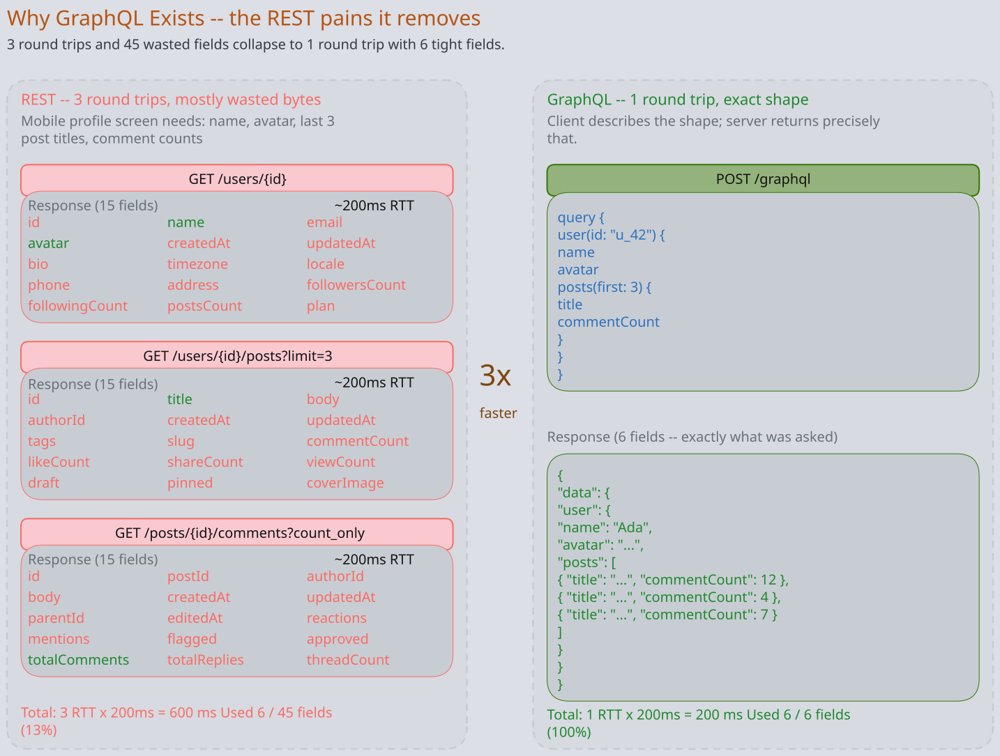
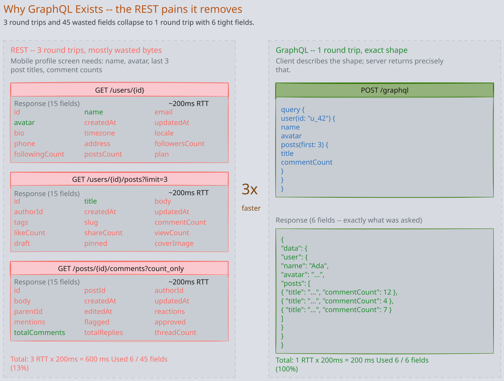
2. The Schema is the Contract
GraphQL’s type system is its most underrated property. The schema is mandatory, strongly typed, machine-introspectable, and serves as the single source of truth for the entire API. There is no equivalent to “REST without OpenAPI” — a GraphQL endpoint cannot exist without a schema.
1. Schema Definition Language (SDL)
Types are declared in SDL. A minimal schema:
type Query {
user(id: ID!): User
events(first: Int!, after: String): EventConnection!
}
type User {
id: ID!
email: String!
posts(first: Int): [Post!]!
}
type Post {
id: ID!
title: String!
author: User!
comments: [Comment!]!
}Three things to notice as a REST engineer:
!means non-null. The type system distinguishes “this field exists and is non-null” from “this field may be null” at the schema level. REST’s “I forgot to document that this can be null” bug is a compile-time error in GraphQL.[Post!]!means a non-null list of non-null Posts. Lists carry two independent nullability bits — the list itself and each element.- The schema is the API. There is no separate OpenAPI / Swagger document that may drift. Clients introspect the live schema; tooling generates types from it. Drift between docs and reality is structurally impossible.
2. Three Operation Types
GraphQL defines three operation types, each mapping to a distinct HTTP semantic:
- Query — read. Idempotent, safe, can be cached. Equivalent to GET.
- Mutation — write. Non-idempotent, has side effects. Equivalent to POST/PUT/DELETE.
- Subscription — server-pushed stream over a persistent connection (typically WebSocket or SSE). No clean REST equivalent — you would build it with SSE or WebSockets separately.
All three flow through the same /graphql endpoint over HTTP POST. The verb does not distinguish them; the operation type in the query body does. This is a deliberate departure from REST’s URL-as-routing.
3. Comparison to OpenAPI
REST + OpenAPI is optional schema. GraphQL is schema-first. The practical difference:
| Property | REST + OpenAPI | GraphQL |
|---|---|---|
| Schema mandatory | No (most teams ship without) | Yes (server cannot start without) |
| Drift between docs and reality | Common; silent | Structurally impossible |
| Field-level nullability | Convention only | Type system |
| Live introspection | Requires separate /openapi.json if any | Built-in __schema query |
| Client codegen | Possible if spec is maintained | Standard practice; tooling assumes it |
The schema discipline GraphQL forces is often more valuable than the wire-format benefit. Teams that adopt GraphQL frequently report that the schema review — not the query language — is what improved their API quality.
3. The Execution Model
Understanding resolver execution is non-negotiable. Every operational problem in the next four sections — N+1, caching, auth, cost attacks — falls out of this one mechanism.
1. Resolvers
Every field in the schema has a resolver function — code that returns the value of that field. A resolver receives four arguments:
- parent — the value of the field one level up in the tree.
- args — arguments to this field (e.g.
idforuser(id: "123")). - context — request-scoped state (auth token, DataLoader instances, DB connection pool).
- info — execution metadata (the full query AST, this field’s path).
A resolver returns either a value, a Promise of a value, or a list. The runtime walks the query tree, calling resolvers layer by layer.
2. The Resolver Tree and Fan-Out
Consider:
query {
events(first: 100) { # layer 1
venue { # layer 2 — runs 100 times
name
city
}
tickets { # layer 2 — runs 100 times
price # layer 3 — runs ~100×M times
}
}
}Execution proceeds in layers:
- Layer 1:
eventsresolver runs once, returns 100 events. - Layer 2: For each of the 100 events, the
venueresolver runs independently → 100 venue calls. In parallel, theticketsresolver runs 100 times → 100 ticket-list calls returning, say, 50 tickets each. - Layer 3: For each of ~5,000 tickets, the
priceresolver runs.
Total resolver invocations: 1 + 100 + 100 + 5,000 ≈ 5,200. Each resolver runs in isolation — it sees only its parent and its args, not its 99 siblings. This is the design’s strength (composability — you can write each resolver without coordinating with the others) and the source of every problem that follows.
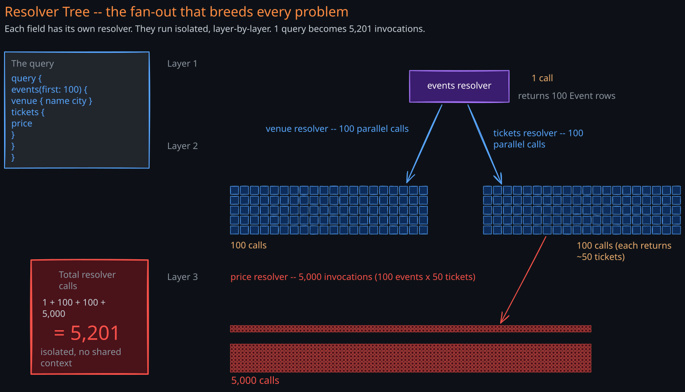
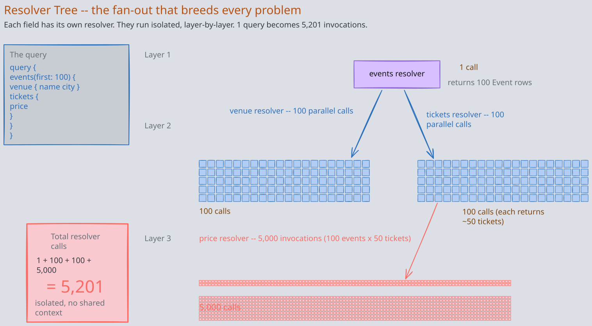
3. Why the Isolation Matters
A REST engineer’s instinct is “just JOIN the tables and return everything in one query.” That works for this query. The next query asks for events { tickets { buyer { email } } } instead, and the JOIN is wrong. The next asks for events + tickets but not buyer, and the JOIN over-fetches.
GraphQL resolvers are composable precisely because they do not know what query they are part of. The cost of composability is that each resolver, naively implemented, fires its own database call — which is the N+1 problem in the next section.
4. The N+1 Problem and DataLoader
The most catastrophic and most common GraphQL bug. Every team hits it. Every team must solve it before going to production.
1. The Mechanism
Take the query above with 100 events, and a naive venue resolver:
venue: async (event) => {
return await db.query('SELECT * FROM venues WHERE id = ?', [event.venue_id]);
}This resolver fires once per event. The execution does:
SELECT * FROM events LIMIT 100— 1 query.SELECT * FROM venues WHERE id = ?— 100 queries, one per event.
Total: 101 queries to render one screen. Add tickets and price resolvers with the same pattern and you reach ~5,200 queries. Page load goes from 200 ms to 30 seconds. Connection pool saturates. The database falls over.
The bug is invisible in unit tests (each resolver works correctly in isolation) and invisible in dev (one event with one venue runs four queries, looks fine). It surfaces in production at scale, in user-facing latency dashboards.
2. DataLoader
DataLoader (created at Facebook, now standard across GraphQL ecosystems) exploits a property of the event loop: all resolver invocations at the same query layer happen within the same tick. DataLoader queues each individual load(id) call without firing the DB; at the end of the tick, it fires one batched query for all queued IDs and distributes results.
Two key properties:
- Batching. N individual
load(id)calls in one tick become oneloadMany([id1, id2, ..., idN])call to the underlying source. The N+1 collapses to 2 queries — one for events, one for all venues. - Request-scoped deduplication. If 100 events share 12 distinct venues, the batched query asks for 12 IDs, not 100. The same venue object is shared across 100 resolver invocations.
The “request-scoped” part is non-negotiable. A global DataLoader cache would leak data across requests — user A’s authorization scope would resolve user B’s queries from cache. Instantiate a new DataLoader per request, attach it to the GraphQL context, and let it die at request end.
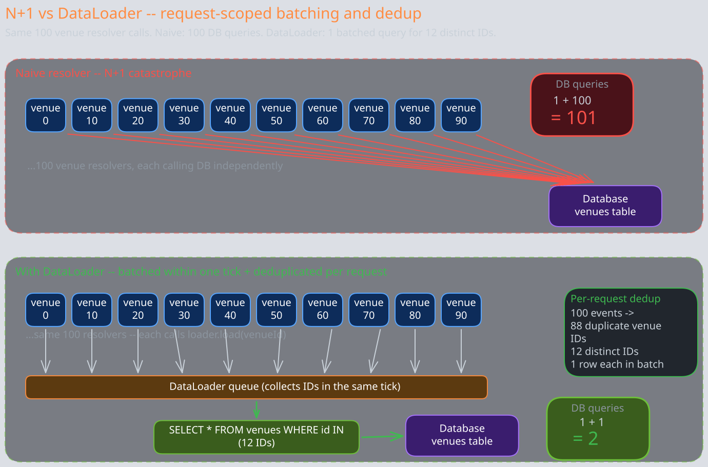
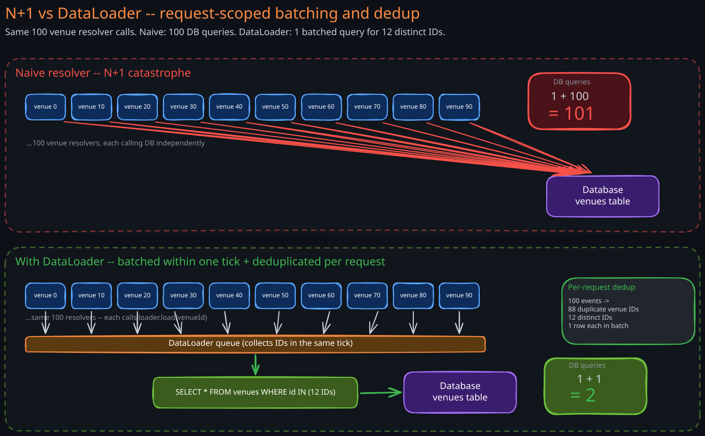
3. Where DataLoader Is Not Enough
DataLoader handles the fan-out across siblings pattern. It does not handle:
- Sequential chains.
user { manager { manager { manager } } }— each layer must complete before the next can start. DataLoader cannot batch across layers, only within a layer. - Heterogeneous joins. If
venuefor event A needs a different shape thanvenuefor event B, you cannot batch. Rare in practice. - Cross-service calls. If
venuelives in a different microservice, DataLoader batches the calls to that service, but you still pay one network hop per batch. This is where federation becomes relevant.
A common pattern is persisted query cost analysis that rejects queries whose worst-case fan-out (computed from the schema) exceeds a threshold — preventing N+1 from ever reaching the resolver layer.
5. Caching — The Hardest Tradeoff
REST gets HTTP caching for free: GET requests, idempotent and cacheable, with URLs as the natural cache key. CDNs, browser caches, reverse proxies, all work out of the box. GraphQL gives all of this up.
1. Why HTTP Caching Breaks
A GraphQL query is sent as POST /graphql with the query in the body. Three things break simultaneously:
- POST is not cacheable by HTTP convention. Every layer in the HTTP infrastructure (browser cache, CDN, reverse proxy) skips POSTs.
- The cache key is the body, not the URL. Even if you change semantics to allow POST caching, the cache must hash the body to compute the key — adding latency on every read and bloating the cache key space (every distinct query variant is its own key).
- The response shape varies per query. Two queries asking different fields on the same
Userproduce different responses. The cache cannot share storage across them.
The naive workaround — “just use GET with the query in a URL parameter” — works for small queries but breaks at the URL length limit (~2 KB on most CDNs) for any non-trivial query.
2. Persisted Queries
The canonical fix. Clients pre-register their queries with the server during build time. Each query gets a stable hash. At runtime, the client sends only the hash plus variables:
POST /graphql
{ "id": "abc123", "variables": { "userId": "u_42" } }
or equivalently as a cacheable GET:
GET /graphql?id=abc123&variables=%7B%22userId%22%3A%22u_42%22%7D
The hash + variables is short enough to fit a URL and forms a clean cache key. CDN caching is back on the table.
A second benefit — often more important than caching — is attack-surface reduction. The server refuses any query not in the persisted-query registry. A malicious client cannot construct a depth-bomb query (next section) because the server only executes pre-approved queries.
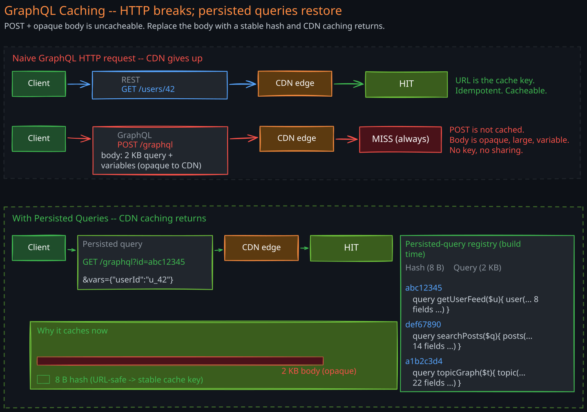
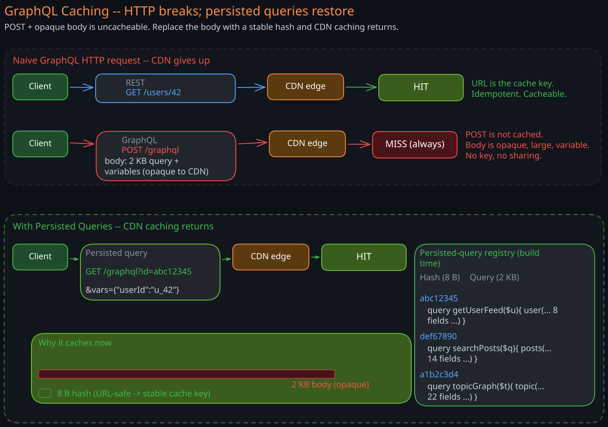
3. Normalized Client Caches
The second half of the caching story lives in the client. Apollo Client, Relay, urql, and React Query (with GraphQL) all ship normalized caches. The cache stores entities by __typename + id, not by query. When two queries both return User:42, they share storage. Updating User:42 from one mutation invalidates both queries automatically.
This is genuinely better than what REST clients typically build. The cost is that the client cache becomes part of your mental model — and cache misses, eviction policy, and consistency between optimistic updates and server responses become application concerns.
6. Field-Level Authorization
REST authorizes at the endpoint level: middleware in front of /admin/users rejects non-admins. The endpoint is the authorization boundary. GraphQL has one endpoint and a query that can select any combination of fields across any types. The boundary moves inward — to individual fields.
1. The New Surface
A single User type might have:
id,name,email— visible to anyone authenticated.address,phone— visible to self, support agents, and certain admins.salary,ssn— visible only to HR + self.internal_notes— visible only to support agents.
A REST API would have /users/{id}, /users/{id}/contact, /admin/users/{id}/hr-data, /support/users/{id}/notes — four endpoints, four middlewares, clear boundaries. GraphQL has one query path and four authorization decisions to make per field.
2. Where Authorization Lives
Two patterns dominate:
- In the resolver. Each resolver checks
context.useragainst the field’s policy before returning a value. Returningnull(for nullable fields) or throwingForbiddenError(for non-nullable fields) communicates the decision. Pros: maximum flexibility. Cons: easy to forget on a new field; auditing requires reading every resolver. - Schema directives (
@auth(role: "hr")). The schema declares the policy; a directive resolver enforces it uniformly. Pros: auditable in one place (the SDL); hard to forget. Cons: limited expressiveness — “salary visible to HR or the user themselves” is awkward.
The strongest production pattern combines both: directives for the simple cases, resolver code for the conditional ones. Pair with schema linting that fails CI if any field lacks an @auth directive — every new field is forced to declare its policy.
3. Subtle Pitfalls
Three field-level auth bugs that have caused real incidents:
- Leaking IDs.
getUser(id)returnsnullif forbidden. ButgetUser(id)returning null vs returning “not found” is observable — an attacker enumerates user IDs and infers existence. - Leaking via relations.
comment.author.emailis checked at theemailfield. But the existence ofcomment.author(returning aUserobject at all) leaks that some user authored the comment, even if you cannot see the email. Sometimes that itself is sensitive. - Bypassing via aliases. A client requests
me: user(id: "self") { salary } them: user(id: "victim") { salary }— same query, two aliases. Authorization must run per resolver invocation, not per field-name. Every mature GraphQL framework gets this right; custom implementations sometimes do not.
7. Query Cost and Depth Attacks
A REST endpoint has a known cost — the implementation decides what work it does. A GraphQL endpoint lets the client describe the work. That moves the cost-control problem to the server.
1. The Attack
Consider a self-referential type:
type User {
id: ID!
friends: [User!]!
}A malicious query:
query {
user(id: "1") {
friends { friends { friends { friends { id } } } }
}
}With an average of 10 friends per user, depth 4 resolves User objects. Depth 6 resolves . Depth 8 resolves — the server runs out of memory or CPU and falls over. The attacker spent one HTTP request to send 200 bytes.
2. Defenses
Four mechanisms, applied together:
- Depth limiting. Reject any query nested deeper than a fixed bound (commonly 5-10). Cheap; catches the obvious attacks.
- Cost analysis. Assign each field a static cost (a leaf field = 1, a list field = N × child cost). Compute total cost before execution; reject queries above a budget.
- Query timeout + complexity-based cancellation. A backstop: cancel any resolver tree that exceeds a wall-clock budget mid-execution.
- Persisted queries. The strongest defense — only pre-registered queries run. An attacker cannot register a malicious query. Combined with depth limiting at registration time, this closes the attack surface entirely.
3. The Operational Reality
Without these defenses, a public GraphQL endpoint is a denial-of-service target. The cost of forgetting depth limits is one bad actor away from an outage. Teams adopting GraphQL should set defaults before the first deploy — adding them retroactively after the first incident is the common path, and a expensive one.
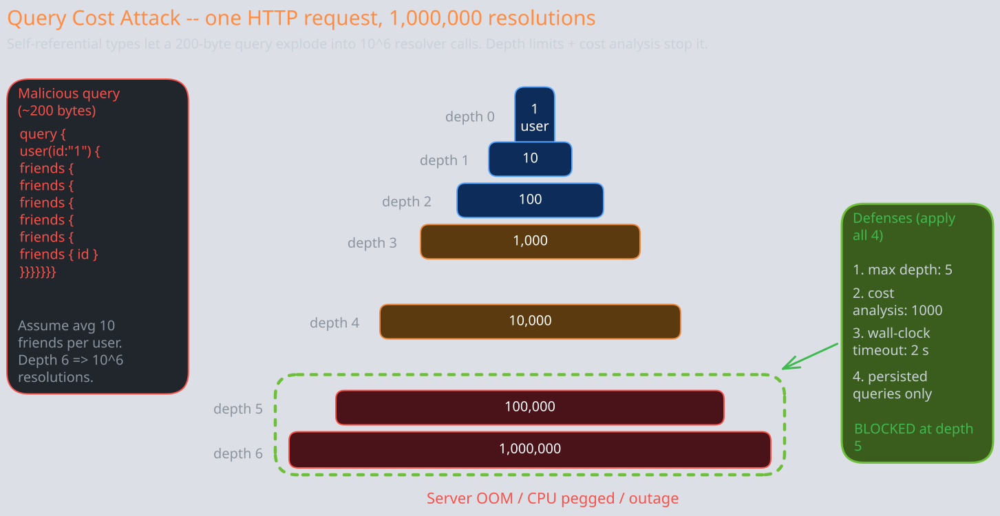
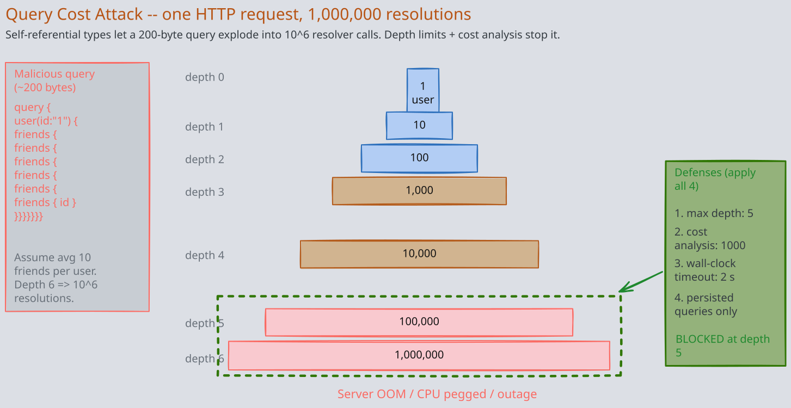
8. Federation and Schema Ownership
A single monolithic schema works for one team. At ten teams or fifty teams, every PR is a schema conflict and every breaking change requires cross-team coordination. Federation is the architectural response.
1. The Model
Federation (Apollo Federation, GraphQL Mesh, Hot Chocolate) splits the schema across multiple subgraph services. Each subgraph owns a slice of the types — Users, Products, Orders, Inventory — and is deployed independently by its owning team. A gateway (also called a router or supergraph) composes the subgraphs into one virtual schema. Clients see one endpoint; behind it, the gateway routes parts of each query to the right subgraphs and stitches results.
Types can be shared across subgraphs via a @key directive:
# In the Users subgraph
type User @key(fields: "id") {
id: ID!
email: String!
}
# In the Orders subgraph — extends User
extend type User @key(fields: "id") {
id: ID! @external
orders: [Order!]!
}The User.orders field is owned by the Orders team. The gateway knows that to resolve user(id: "1") { email, orders { total } }, it must hit the Users subgraph for email and the Orders subgraph for orders, joining on id.
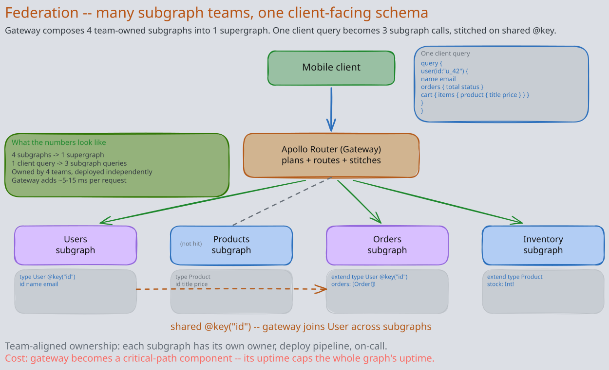
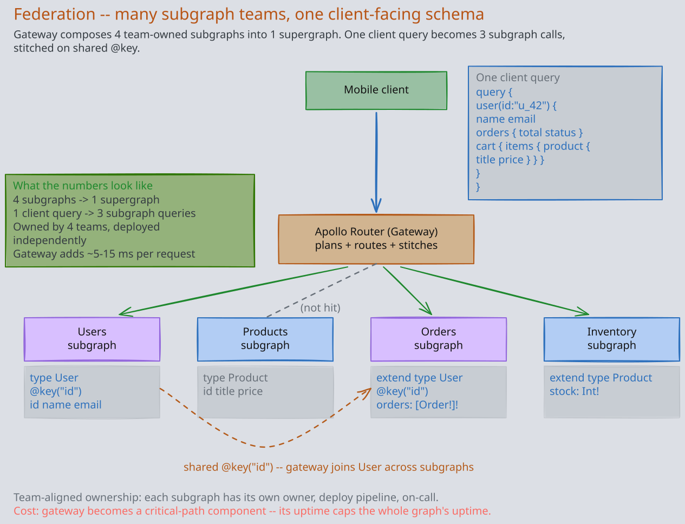
2. What This Buys
- Team-aligned ownership. Each team owns its subgraph’s schema, deploy pipeline, and on-call.
- Independent deploy. A subgraph can ship breaking changes to its own types if no other subgraph depends on the broken bit.
- Single client-facing endpoint. Clients still see one schema, one query, one round trip.
3. What It Costs
- Gateway becomes a critical-path component. A bug in the gateway is a global outage. Latency added by the gateway is paid on every request.
- Cross-subgraph queries can fan out. One client query becomes 3-5 internal subgraph queries; if any are slow, the whole query is slow.
- Schema-composition rules are non-trivial. Two subgraphs cannot define overlapping fields without explicit ownership rules. Migrations across subgraphs need versioned coordination.
- Auth becomes harder. The gateway typically terminates client auth, but each subgraph needs to trust the gateway’s claims — usually via mTLS + a forwarded identity header.
4. Federation vs BFF
Both solve “multiple clients aggregating multiple backends.” Compare:
| Property | Federation | BFF |
|---|---|---|
| Per-client tailoring | One graph for all clients | One BFF per client experience |
| Who owns the aggregation logic | Subgraph teams, composed by gateway | The client team owning the BFF |
| Query shape | Client-driven | Server-defined per BFF endpoint |
| Best fit | Many teams, shared core domain | Few client experiences with distinct UX needs |
The patterns also combine: a BFF can internally call a federated GraphQL gateway. The BFF gives the client a tailored REST or gRPC API; the federation gives the BFF efficient access to N internal services.
9. Operations: Errors, Observability, Schema Evolution
Three operational concerns that look different from REST.
1. Error Modeling
GraphQL responses always return HTTP 200 — even on errors. The response envelope is:
{
"data": { "user": null },
"errors": [
{
"message": "User not found",
"path": ["user"],
"extensions": { "code": "NOT_FOUND" }
}
]
}This breaks every HTTP-level monitoring tool that pages on 5xx rates. You will see “100% success rate” while users see broken pages. Two consequences:
- Application-level error metrics. Instrument the GraphQL runtime to emit error counts per error code, per resolver, per operation name. Page on application errors, not HTTP status.
- Partial successes are first-class. A query asking for 10 fields might return 9 plus an error on the 10th. Frontend code must handle
dataanderrorstogether, not as exclusive branches.
The HTTP-200-always convention is divisive — some teams set their server to return HTTP 4xx/5xx on certain error classes to recover HTTP monitoring. Both are valid; pick one and document it.
2. Observability Without URL-per-Endpoint
REST’s per-endpoint metrics (latency for GET /users/{id} vs GET /products/{id}) come free from any HTTP middleware. GraphQL has one endpoint. Standard practice:
- Tag traces with the operation name. Clients send
operationNamein every query. Use it as the primary cardinality dimension instead of URL. - Per-resolver tracing. Wrap every resolver in tracing instrumentation. The resulting trace shows the resolver tree — invaluable for diagnosing N+1 and slow downstream calls.
- Per-field metrics. Field usage telemetry (which fields are actually requested) is how you safely deprecate. REST never knew which response fields were used; GraphQL does.
3. Schema Evolution
GraphQL’s evolution model is additive + deprecation, not versioning:
- Add a field — fully backward compatible. Old clients ignore it.
- Mark a field
@deprecated(reason: "Use newField instead."). Clients still get it but tooling warns. - After field-usage telemetry confirms zero consumers, remove it.
You never bump /v1 to /v2. The schema evolves continuously. The cost is discipline — once a field is in the schema, it is hard to remove. Schema design reviews matter more than they would for REST.
10. When NOT to Use GraphQL
GraphQL is not a universal upgrade over REST. Five situations where REST or gRPC remains the right answer:
- Pure CRUD with strong HTTP caching needs. A media catalog API where
GET /content/{id}is hit a billion times a day from CDNs. REST GET with cache headers is operationally simpler and faster than persisted queries + cache infrastructure. - Internal high-throughput service-to-service. gRPC is faster, more typed, and supports bidirectional streaming. GraphQL’s flexibility is wasted between services that know each other’s contracts.
- Small teams without schema discipline. GraphQL requires investment in schema review, query cost analysis, persisted queries, and observability tooling. A two-person team shipping a CRUD admin panel will out-deliver by using REST.
- Public APIs where partners build code generators against your schema. REST + OpenAPI has a wider tooling ecosystem and a lower learning curve for external integrators. (GitHub kept REST v3 alongside GraphQL v4 for exactly this reason.)
- APIs whose primary consumers care about HTTP semantics. Webhooks, callbacks, integrations expecting standard 4xx/5xx error codes — fighting HTTP-200-always is more pain than the schema flexibility is worth.
The decision matrix in API Protocols Compared § 8 gives the full multi-protocol view. For BFF-vs-federation-vs-direct decisions see Backend for Frontend.
Revision Summary
- GraphQL is a client-controlled query language for fetching exactly-shaped responses through one endpoint. It exists because REST’s three structural pains — over-fetching, round-trip multiplication, and rigid contracts — compound on multi-client products.
- The schema is mandatory, strongly typed, and self-documenting. SDL plus introspection eliminates the drift between docs and reality that plagues REST.
- The execution model is a tree of independent resolvers. This is the source of GraphQL’s composability and the source of every operational problem — N+1, caching, auth, cost attacks — that follow.
- The N+1 problem is the canonical bug. DataLoader (request-scoped batching + deduplication) is non-negotiable. It collapses 1+N queries to 2 and dedups repeated IDs within a request.
- HTTP caching breaks (POST + opaque body + per-query shape). Persisted queries restore CDN caching by replacing the body with a hash; they also reduce attack surface by gating execution to pre-approved queries.
- Authorization moves from endpoint to field. Schema directives plus resolver checks plus CI linting are the production-grade pattern. Watch for alias-bypass, ID-enumeration, and relation-leak bugs.
- Query cost is client-controlled — a public GraphQL endpoint without depth + cost limits is a DoS target. Apply depth limiting, cost analysis, timeouts, and persisted queries together.
- Federation splits one schema across N subgraph services with a composing gateway. Buys team-aligned ownership and independent deploys; costs gateway criticality and cross-subgraph fan-out.
- Operations differ from REST: HTTP 200 always, per-operation metrics not per-URL, schema evolution by addition + deprecation not versioning. Field-usage telemetry enables safe deprecation that REST never had.
- Avoid GraphQL for pure CRUD with HTTP caching, internal service-to-service (use gRPC), small teams without schema discipline, public partner APIs, and consumers expecting HTTP-native error semantics.
Deep Understanding Questions
-
N+1 deep dive. A team’s mobile feed query takes 8 seconds at p99 in production but 200 ms in load tests. The schema has
Feed { posts { author { followerCount } liked } }. Walk through the resolver tree, identify every place N+1 could be hiding, and explain what DataLoader does and does not solve for each. What would you measure to confirm the diagnosis before changing code? Ans: -
Caching tradeoff. Your product is 80% read-heavy with a tight latency SLA (p95 < 100 ms) and global CDN distribution. The team wants to migrate from REST to GraphQL for frontend developer velocity. What does the caching strategy need to look like for this not to be a regression, and at what scale does the operational complexity of persisted queries + normalized client cache outweigh the developer-velocity gain? Ans:
-
Field-level auth bypass. Audit this resolver pattern: a
Usertype hassalarywith@auth(role: "HR"). A clever attacker sendsquery { me: user(id: "1") { salary } them: user(id: "victim") { salary } }. Walk through what could go wrong in the framework implementation, name three concrete bugs you have to defend against, and propose a test you would run in CI. Ans: -
Query cost attack. Design a cost-analysis policy for a schema where
Posthascomments: [Comment!]!andCommenthasreplies: [Comment!]!(self-referential). Specify exact field weights, the aggregation formula, the maximum budget, and what error you return on rejection. Explain why depth limiting alone is insufficient here. Ans: -
Federation criticality. Your federated graph runs on 12 subgraph services behind one Apollo Router gateway. The gateway has 99.99% uptime; each subgraph has 99.95%. What is the realistic uptime of the supergraph as seen by the client, and what architectural changes would you make to improve it? When would you choose not to federate despite having many teams? Ans:
-
Schema deprecation in the wild. You inherited a 4-year-old GraphQL schema with 800 fields, half deprecated, no usage telemetry. The product team wants to remove deprecated fields. Describe the minimum operational instrumentation you would deploy first, the rollout plan to safely remove fields, and how you would handle a partner integration that still uses one of the deprecated fields. Ans:
-
GraphQL vs gRPC for internal services. A microservice team is debating GraphQL vs gRPC for their new service-to-service API. The service is called by 20 other services, evolves frequently, and exposes ~50 fields. Argue both sides — what does GraphQL buy them at this layer, what does it cost, and what is the data point that should decide it? Ans:
-
The HTTP-200-always problem. Your alerting fires on HTTP 5xx rate > 1%. The team migrates to GraphQL. Two months later, customers report broken pages but no alerts have fired. Trace the failure mode through the monitoring stack, propose three instrumentation changes, and decide whether you would change the server to return non-200s on error — defend the choice. Ans: